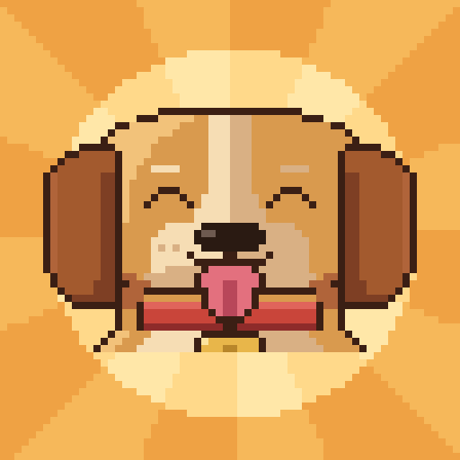

Español · English

Woof Empire – Idle Dog Clicker
Acaricia a tu perro, consigue huesos y levanta un imperio canino que empieza en un salón y acaba en el cosmos… mientras los gatos de la Gestoría Gatuna intentan sabotearte con contratos, auditorías y becarios.
Un juego incremental en pixel art para Android y navegador.
Privacidad
Política de privacidad de Woof Empire
Cómo borrar tus datos
Contacto
Jonatan Martín (JMartinsDev) · jmartinsjdev@gmail.com
Tipografías: Press Start 2P y VT323, con licencia SIL Open Font License (1, 2).